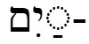
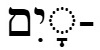
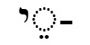

Lesson 6
Nouns: Preposition prefixes
this is the synopsis
Special plurals - duals - this can now go in yom lesson  
2 days
days
day
2 hands
hands
hand
Dual of yom occurs very infrequently, usual plural is yamim. "Ordinary" dual of yad occurs very infrequenlty, the most frequent plural is the dual, but hardly ever have the word "two" in the translation
"of" 
See Lessons.doc for examples Bnei yisrael as example – always translated “the” when second word is name of person or place דְבַר־ יְהוָה Gen 15:1 the word of the Lord מֶלֶךְ מִצְרַיִם Ex 1:15 The king of Egypt When second word not name of person or place, “ha-“ only on second word בְּנֵי הַמֶּלֶךְ 10_1K 01:19.08.5 the sons of the king = the king’s sons אִישׁ הָאֱלֹהִים Deut 33:1 Moses, the man of God… דִּבְרֵי הָעָם Ex 19:8 …and Moses brought back the people’s words [the words of the people] to the Lord. מַלְכֵי הָאָרֶץ Psalm 102:16 all the kings of the earth
Plural |
Singular |
||
| בְּנֵיwords/w013_bnei sons of |
בָּנִיםwords/w013_banim sons |
בֶּןwords/w013_ben son of |
בֵּןwords/w013_ben son |
| אֱלֹהֵיwords/w013_elohei God of, gods of |
אֱלֹהִיםwords/w018_elohim God, gods |
- | |
| מַלְכֵיwords/w020_malchei kings of, rulers of |
מְלָכִיםwords/w020_mlachim kings, rulers |
מֶלֶךְ words/w020_melech king, ruler, king of, ruler of |
|
| יְמֵיwords/w022_ymei days of |
יָמִיםwords/w022_yamim days |
יוֹםwords/w022_yom day, day of |
|
| אַנְשֵׁיwords/w023_anshei men of, husbands of |
אֲנָשִׁיםwords/w023_anashim men, husbands |
אִישׁwords/w023_ish man, husband, man of, husband of |
|
| בָּתֵּיwords/w025_batei houses of |
בָּתִּיםwords/w025_batim houses |
בֵּיתwords/w025_beit house of |
בָּיִתwords/w025_bayit house |
| עַמֵּיwords/w027_amei peoples of |
עַמִּיםwords/w027_amim peoples |
עַםwords/w027_am or
עָםwords/w027_am people, people of |
|
| יְדֵיwords/w028_ydei (two) hands of |
יָדַיִםwords/w028_yadayim
(two) hands יָדוֺתwords/w028_yadot
hands |
יַדwords/w028_yad hand of |
יָדwords/w028_yad hand |
| דִּבְרֵיwords/w030_divrei words of |
דְּבָרִיםwords/w030_dvarim words |
דְּבַרwords/w030_dvar word of |
דָּבָרwords/w030_davar word |
| אֲרָצוֺתwords/w021_arazot lands, lands of |
אֶרֶץwords/w021_eretz land, earth, ground, land of |
||
Extra: (don’t include ah to at because haven’t introduced any -ah nouns yet) but include as extra grammar? Most frequent occurrences are shana (#51) and isha (#62)
Notes about the nouns, metaphorical translations
אֱלֹהִיםwords/w018_elohim Have already learned this word referring to God (actually this is the most frequent use of this word). Sometimes "gods". Example:Exodus 20:3 You shall have no other gods besides Me.
Object marker וְאֵתwords/w005_vuhet אֵת words/w005_et
(subject)
(verb)
(object)
Or, more usually in Biblical Hebrew the word order is often verb-subject-object
(verb)
(subject)
(object)
אֵת words/w005_et וְאֵתwords/w005_vuhet and used to indicate the noun which is the object of the verb
- there is no equivalent word in English, so they are not translated.
Section heading probably don't need this
Exercise
some explanatory text
this is the exercise